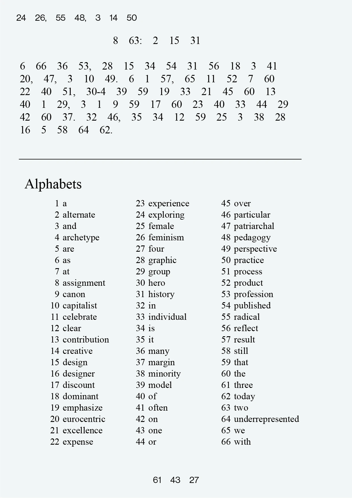
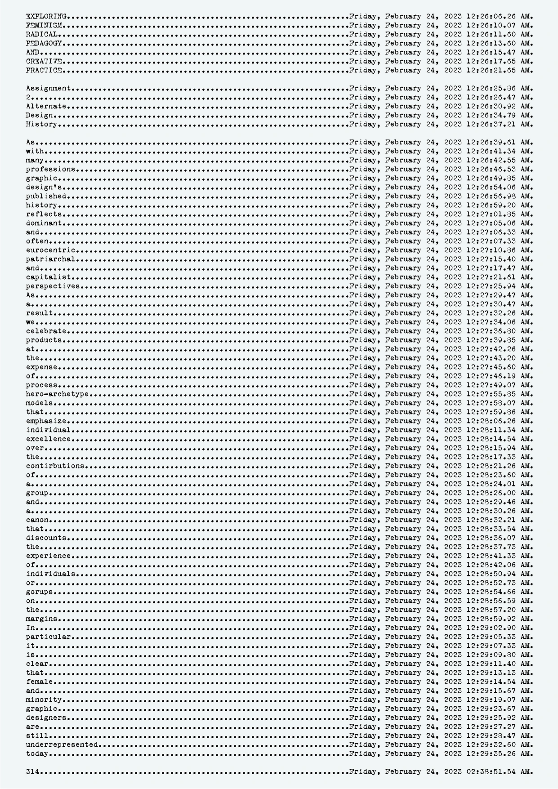
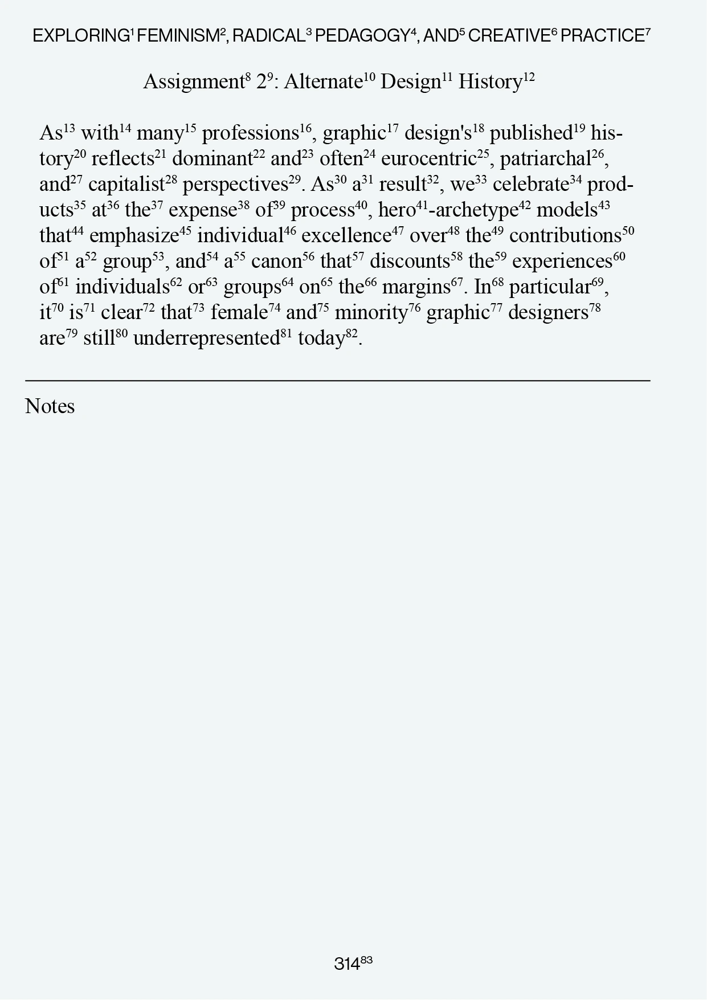
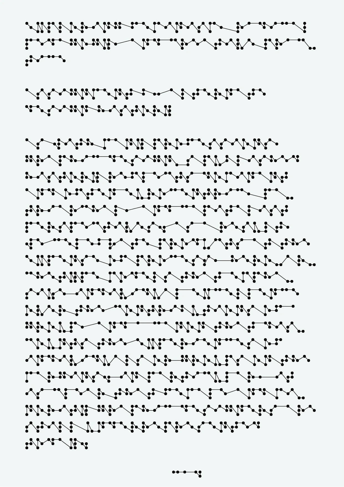
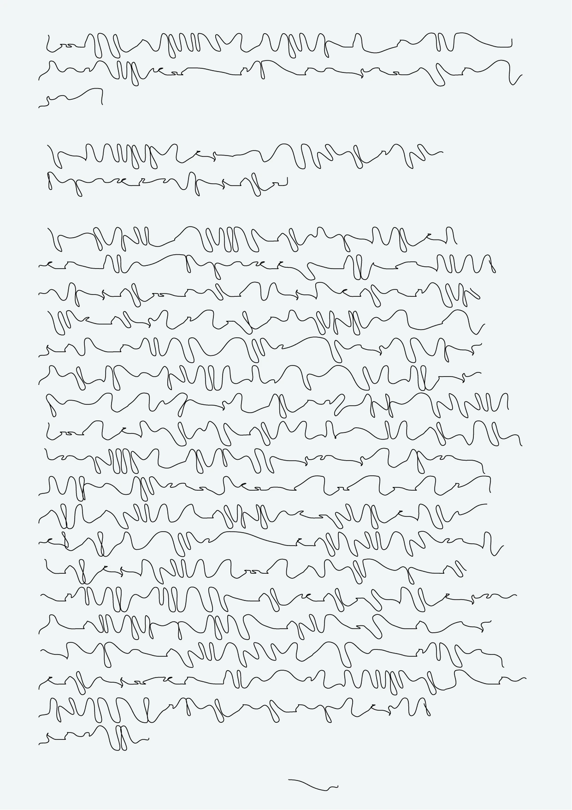

Messy and Neat：文本解码与互动阅读 我把关于女性主义与设计教育的段落改写成八组阅读谜题。Messy 放谜面，Neat 放对应线索，读者可以查找曲目、对照窗户的亮灭，或操作纸上的缝线来解码。早期折册难以配对，最终改成编号的独立纸页，并和海报一起展出。 展厅呈现 桌面展陈，编号的谜面与提示材料分开放置。 洞洞板上的磁吸大尺寸成品。 解码规则样本 为词汇编制数字索引，并按时间戳记录每个词的出现。 正文逐词标号，83 条词典释义另列，供读者对照查找。 先连结盲文点阵，再移除定位点，用留下的线条重新编码。